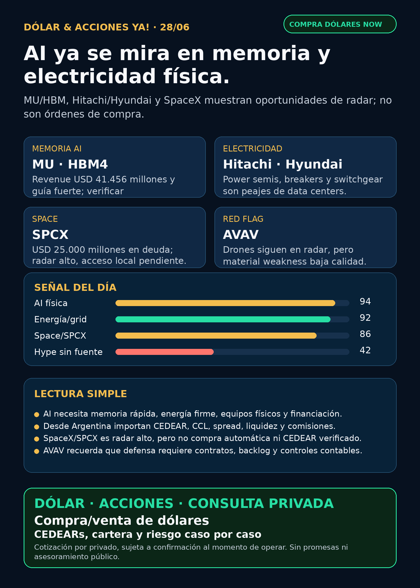

AI física: memoria, electricidad y SpaceX bajo lupa.
Reporte educativo para Argentina: qué señales mirar, qué riesgos no comprar con los ojos cerrados y qué instrumento falta verificar antes de operar.
Texto WhatsApp
Placa del día

Dólar & Acciones YA — 28/06
Lectura simple del día
La señal de hoy es clara: la AI se está volviendo cada vez más física. No alcanza con mirar software o modelos. Hay que mirar memoria HBM, electricidad, turbinas, transformadores, switchgear, data centers y deuda para financiar toda esa infraestructura.
En criollo: si no hay memoria rápida y electricidad firme, el modelo no corre. Y si no hay instrumento líquido, precio razonable y acceso real desde Argentina, una buena historia global no se convierte automáticamente en una buena operación local.
Esto no es recomendación de compra ni venta. Es research educativo para decisión humana.
Tesis central
El radar de hoy junta tres capas:
1. AI infra se ensancha: Micron confirma fuerza extrema en memoria/HBM; Cerebras muestra un competidor público real con OpenAI, pero con concentración de cliente alta.
2. Electricidad física es el segundo peaje: Hitachi Energy, HD Hyundai Electric y Project Kilby muestran que data centers necesitan power semiconductors, breakers, switchgear, turbinas y generación dedicada.
3. Space y defensa tienen señales opuestas: SpaceX/SPCX cerró deuda grande y se vuelve cada vez más visible para SEC; AVAV sigue en radar drones/defensa, pero trae red flag contable.
Ranking educativo por calidad de tesis, no por orden de compra
1. Memoria + electricidad para AI. Es la tesis más sólida del día: MU/HBM por un lado; Hitachi/Hyundai/GEV/CAT/CVX por el lado de energía física.
2. Cerebras / CBRS como alternativa AI compute. Hay contrato OpenAI y señal fuerte, pero Customer A concentra 63% del revenue. Radar alto, riesgo alto.
3. SpaceX/SPCX. La emisión de senior notes por USD 25.000 millones fortalece la idea de SpaceX como activo financiero visible, pero no significa compra automática.
4. Energía Argentina. YPF recompró notas; YPF, TGS, Pampa y Central Puerto siguen como mapa educativo local cuando la tesis global es energía.
5. Defensa / drones. AVAV no se descarta, pero el restatement y material weakness obligan a bajar el entusiasmo.
Watchlist priorizada de hoy
MU — Micron
- Señal: SEC 8-K/EX-99.1: FQ3 FY2026 revenue de USD 41.456 millones, gross margin GAAP 84,6%, guía FQ4 de USD 50.000 millones ± USD 1.000 millones, y HBM4 en high-volume shipments para su lead customer.
- Fuente: SEC EDGAR — https://www.sec.gov/Archives/edgar/data/723125/000072312526000013/a2026q3ex991-pressrelease.htm
- Lectura: HBM es memoria crítica para AI. No es accesorio: es uno de los peajes de la fábrica de AI.
- Accionable internacional/global: Nasdaq
MU, candidato de seguimiento para análisis humano. - Accionable local Argentina: verificar CEDEAR/disponibilidad, volumen, spread, comisiones y CCL antes de cualquier ejecución.
- Riesgo: ciclo de memoria, valuación, margen, concentración de demanda AI.
CBRS — Cerebras Systems
- Señal: SEC 10-Q Q1 FY2026:
Customer Afue 63% del revenue; MRA con OpenAI por 750MW de AI inference compute comprometido, con opción adicional de 1,25GW. - Fuente: SEC EDGAR — https://www.sec.gov/Archives/edgar/data/2021728/000162828026044981/cbrs-20260331.htm
- Lectura: fortalece la idea de que no todo el compute AI pasa por NVIDIA, pero la concentración de cliente es una bandera amarilla grande.
- Accionable internacional/global: radar alto con riesgo alto.
- Accionable local Argentina: no hay CEDEAR/acceso local verificado; no accionable local directo por ahora.
SPCX — SpaceX
- Señal: SEC 8-K: SpaceX cerró emisión de USD 25.000 millones en senior notes: tramos 2031, 2033, 2036, 2046 y 2056.
- Fuente: SEC EDGAR — https://www.sec.gov/Archives/edgar/data/1181412/000162828026045763/spcx-closing8xkjune2026.htm
- Lectura: SpaceX ya no es sólo rumor de redes: tiene eventos financieros SEC-visibles. Pero acción, bono, fondo cerrado y wrapper son instrumentos distintos.
- Accionable internacional/global: radar alto educativo; falta verificar precio, liquidez, mercado e instrumento concreto.
- Accionable local Argentina: no hay CEDEAR verificado; no presentar como compra local.
- Riesgo: confundir empresa extraordinaria con entrada automática o perseguir wrappers a cualquier premium.
HOOD — Robinhood
- Señal: SEC 8-K/EX-99.1: cerró USD 2.200 millones de convertible senior notes 0,00% due 2029; usó aprox. USD 290 millones para recomprar acciones y USD 123,2 millones para capped calls.
- Fuente: SEC EDGAR — https://www.sec.gov/Archives/edgar/data/1783879/000178387926000077/a991projectcatalyst-closin.htm
- Lectura: da caja y opcionalidad, pero una convertible también es evento de estructura de capital y potencial dilución futura.
- Accionabilidad: global en radar; Argentina/CEDEAR a verificar.
RKLB — Rocket Lab
- Señal: NASA seleccionó a Rocket Lab para tres lanzamientos Electron: dos PolSIR y uno TSIS-2.
- Fuente: GlobeNewswire / Rocket Lab — https://www.globenewswire.com/news-release/2026/06/25/3317935/0/en/nasa-selects-rocket-lab-to-launch-sun-earth-sciences-missions.html
- Lectura: suma evidencia de ejecución operativa y clientes repetidos; no es AI pura.
- Accionabilidad: global en radar; instrumento local/liquidez pendiente para Argentina.
AZN — AstraZeneca
- Señal: SEC 6-K: FDA aprobó Truqap + abiraterone/prednisone para PTEN-deficient metastatic prostate cancer.
- Fuente: SEC EDGAR — https://www.sec.gov/Archives/edgar/data/901832/000165495426005964/a1987i.htm
- Lectura: salud no es sólo GLP-1. Oncología de precisión también puede sostener moat pharma.
- Accionabilidad: global/CEDEAR a verificar según broker; señal de seguimiento, no recomendación.
Energía, grid, transformadores y power hardware
Este es el bloque central para lectores argentinos: el segundo peaje de AI es electricidad física.
- Hitachi Energy / Hitachi (
6501.T,HTHIY): anunció expansión de power semiconductor production en Suiza dentro de un programa global de inversión de USD 9.000 millones. Fuente: https://www.hitachienergy.com/latam/es/news-and-events/press-releases/2026/06/hitachi-energy-expands-power-semiconductor-production-at-swiss-site - HD Hyundai Electric (
267260.KS): Korea Herald reportó inversión de KRW 116.100 millones en Cheongju Power Distribution Campus, con foco en circuit breakers/switchgear y demanda de AI data centers. Fuente: https://www.koreaherald.com/article/10790457 - Project Kilby — Chevron/Microsoft/GE Vernova/Caterpillar: CNBC reportó data center de casi 2,7GW con generación dedicada vía turbinas de GE Vernova y Caterpillar. Fuente: https://www.cnbc.com/2026/06/22/chevron-cvx-microsoft-msft-natural-gas-data-center.html
- Proxies globales a monitorear:
GEV,CAT,CVX, Hitachi/HTHIY, Siemens EnergyENR.DE, HD Hyundai Electric, Hyosung Heavy Industries. - Privadas/no accionables directas: Virginia Transformer y Delta Star quedan como radar industrial, no como acción comprable.
- Argentina energía: YPF, TGS, Pampa Energía y Central Puerto quedan en vigilancia educativa. YPF reportó recompra de notes por Ps. 33.729 millones / USD 23,214 millones nominal. Fuente: https://www.sec.gov/Archives/edgar/data/904851/000155485526001380/MainDocument.htm
Pharma / salud
- AZN: señal verificada de oncología por FDA/SEC.
- LLY / oral GLP-1: discovery trajo claims sobre orforglipron/FDA, pero no se encontró fuente primaria FDA/Lilly nueva. Estado: no publicar como aprobado.
- NVO / Wegovy oral: requiere fuente EMA/MHRA/Novo específica antes de elevar de nuevo.
- PFE: guidance/CFO ya estaba en radar previo; sin novedad fuerte 24–72h.
Conclusión: salud sigue cubierta, pero hoy el titular es AI física + energía.
Defensa, aerospace y guerra física
- AVAV — AeroVironment: SEC 10-Q/A: restatement por error en goodwill impairment analysis del Space reporting unit y nueva material weakness en internal control over financial reporting. Fuente: https://www.sec.gov/Archives/edgar/data/1368622/000110465926076141/avav-20260131x10qa.htm
- Lectura: drones/counter-UAS siguen en radar, pero la contabilidad y los controles importan. Defensa no es sólo “hay guerra, sube”. Hay que mirar contratos, backlog, márgenes, integración y governance.
- GE Aerospace / RTX / LMT / NOC / GD / HWM / KTOS / BA / ITA-XAR: carril revisado; sin señal primaria nueva más fuerte que AVAV/RKLB para titular hoy.
Autonomous mobility / physical AI
Tesla, Waymo/Alphabet, Uber, Zoox/Amazon y Joby fueron revisados. Hoy no apareció señal primaria nueva que supere memoria + energía + space. Estado: revisado sin señal fuerte nueva.
Space, private markets y wrappers
SpaceX/SPCX queda como carril central por SEC y deuda pública. DXYZ/RVI pueden servir para estudiar exposición a private tech, pero no son acceso limpio automático a SpaceX/OpenAI. Antes de cualquier tesis accionable hay que revisar NAV, premium/descuento, liquidez, holdings reales, custodia, impuestos y acceso Argentina/USA.
Capa Argentina: dólar, MEP/CCL, CEDEARs e instrumento
Para operar desde Argentina, mirar el ticker global no alcanza. Hay que verificar:
- si existe CEDEAR o instrumento local;
- ratio CEDEAR y liquidez;
- spread entre compra/venta;
- comisiones, derechos e impuestos;
- CCL implícito;
- si conviene vía Argentina o broker global;
- tamaño de posición y riesgo dentro de cartera.
Buena empresa afuera ≠ buen precio hoy ≠ buen instrumento local ≠ buen tamaño para una cartera.
La cartera de Ricardo fue liquidada, devuelta y terminada según estado vigente informado por Charly el 24/06. No hay P&L activo que reportar. Este radar queda como vigilancia para próxima decisión humana o nuevo inversionista.
Red flags / hype para ignorar
- “AI es sólo NVIDIA”: incompleto. Memoria, energía, cooling, networking y permisos también capturan valor.
- “Cerebras tiene OpenAI, entonces no tiene riesgo”: falso. La concentración de cliente es alta.
- “SpaceX tiene filings, entonces cualquier wrapper sirve”: falso. Acción, bono, fondo cerrado y wrapper son instrumentos distintos.
- “HOOD emitió convertible 0%, entonces es automáticamente bueno”: no. Puede financiar crecimiento, pero también tiene riesgo de dilución futura.
- “LLY/FDA aprobó pill GLP-1”: no elevar sin fuente primaria.
- “AVAV = drones = comprar defensa”: no sin revisar contabilidad, controles, backlog e integración.
- “GOLD es Barrick seguro”: no. El instrumento oro/GLD/GOLD/B sigue ambiguo si no se aclara ticker exacto.
Recibo visible de cobertura
Revisado hoy: watchlist base (RKLB, NVDA, PLTR, TSM, MU, GOOGL/GOOG, AAPL, HOOD, TSLA, ASML, oro/GLD/GOLD/B, RVI), AI infra/semis/memory, energía/grid/transformadores, energéticas argentinas, pharma/GLP-1, defensa/aeroespacial, SpaceX/SPCX/RKLB/wrappers, fintech/AI agents, autonomous mobility/physical AI y crypto gobernado sin señal nueva para elevar.
Qué mirar después
1. Verificar acceso Argentina/CEDEAR/spread para MU, CBRS, HOOD, GEV, Hitachi/HTHIY y proxies de power hardware.
2. Seguir SpaceX/SPCX: deuda, liquidez, instrumento real y diferencia entre acción, bono y wrapper.
3. Monitorear próximos datos de Micron/HBM y demanda de memoria AI.
4. Ver si Cerebras transforma contratos grandes en margen operativo real y baja concentración.
5. En defensa, exigir DoD/IR/SEC antes de elevar contratos o titulares.
Servicio privado
Dólar · CEDEARs · Acciones · Consulta privada. Si querés comprar o vender dólares, invertir en acciones o pensar una estrategia financiera más personalizada, escribime por privado y lo vemos caso por caso. Cotización sujeta a confirmación al momento de operar.
Disclaimer
Este reporte es informativo y educativo. No es asesoramiento financiero personalizado ni una orden de compra o venta. Las decisiones reales dependen de precio, liquidez, instrumento, horizonte, monto, impuestos, comisiones y tolerancia al riesgo.